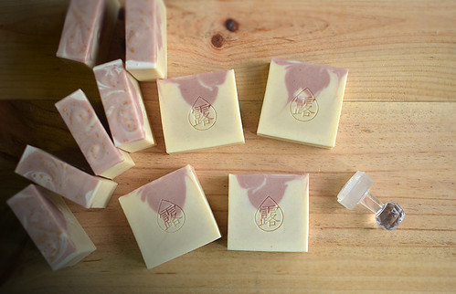

玫瑰人生 手工皂 乾性敏感肌適用
漢方.純露.辣木洗臉皂
【玫瑰人生 冷製皂】
『玫瑰人生』這塊皂的設計出發點，即是希望您擁有如玫瑰般美好的人生。
La vie en rose. (法文) 玫瑰般的人生，是一首法國香頌名曲。
這塊皂中含有非常高比例的冷壓橄欖油，以及有機白玫瑰純露、漢方玉容散、辣木油、生可可脂、乳木果脂等多種天然美膚配方，醞釀出此款溫柔滋養的手作皂，推薦您用來洗臉。自然香氣，無精油添加。敏感肌膚、乾燥肌膚也適用喔～
★製作成份： 辣木油, 乳油木果脂, 粉紅礦泥, 有機白玫瑰純露, 漢方玉容散, 橄欖油, 椰子油, 棕櫚油, 可可脂, 純水, 氫氧化鈉。
★適用：中性，乾性，敏感肌膚都適合使用。
★用法：洗臉、全身沐浴。以泡沫輕輕按摩後沖淨。
洗臉觸感乾淨不緊繃。洗臉、洗澡都好用。
★熟成重量：110～115 g (4 oz.)
每一個手作皂需經過6~8週熟成時間，水份散去使肥皂更為緊實，這裡標示的是已經縮水過後的熟成重量。


JL House 的手工皂皆為出自設計工作室之原創商品，提供富含美感、不斷創新思考的獨特手工製自然生活沐浴產品。